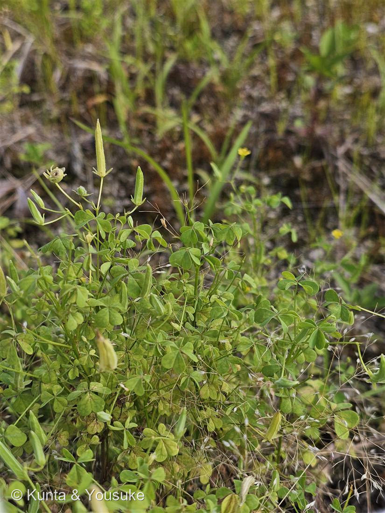
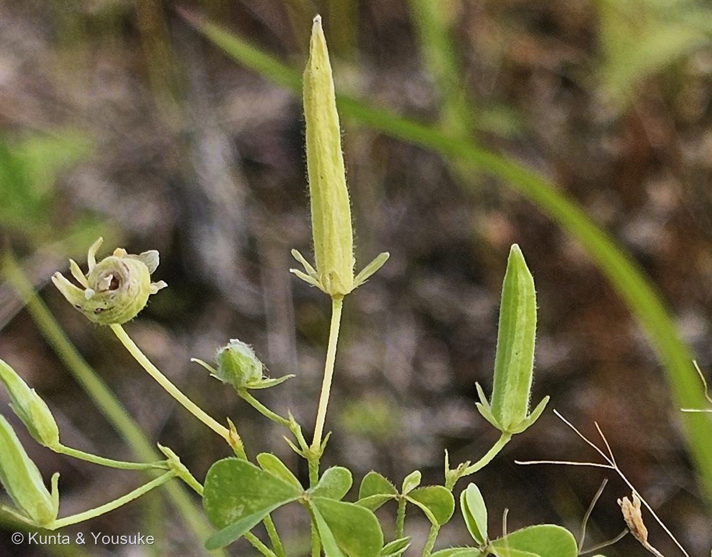
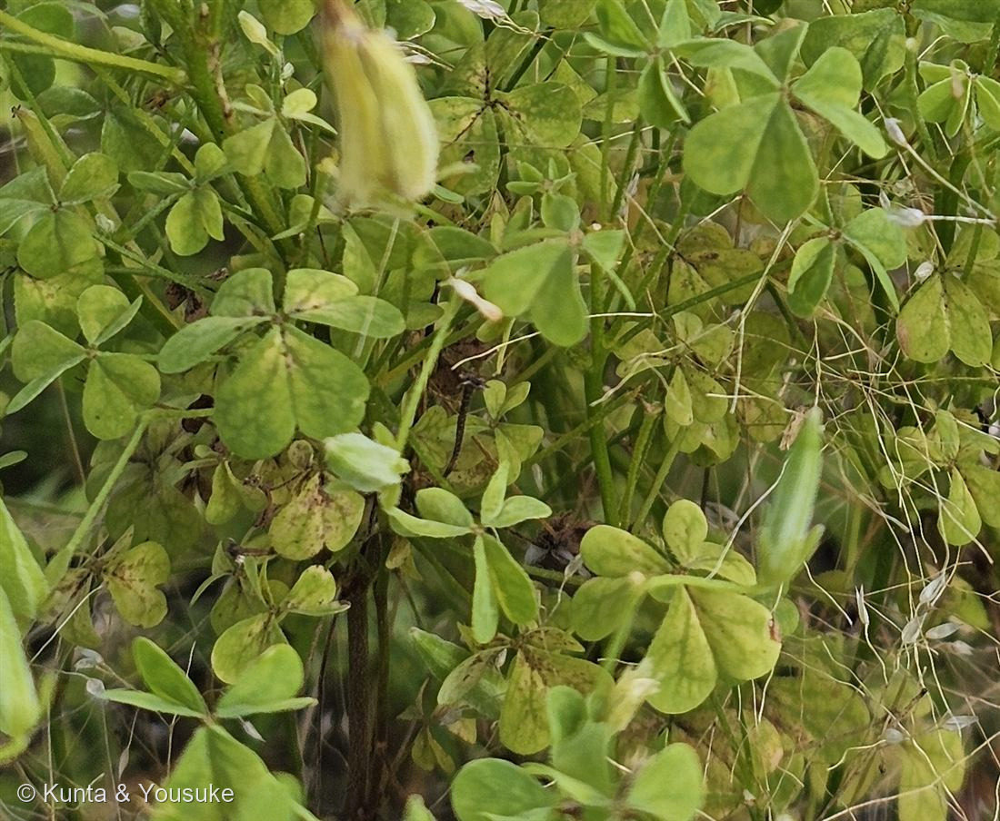

地図を読み込んでいるよ…
🔍 写真も地図も、押しているあいだ拡大して見られるよ（スマホは指を置いてすこし待ってね）。
🌍 の地図＝この子がもともと自生していた場所。──でもこの子は、まだ名前が分からない。名前が分からないと、ふるさとも分からないんだ。だから地図はまっさらのまま、まんなかに「？」を出しておくね。分かったら、ここを塗りに来るよ。
⚠079のとなりの子も「？」。でも、決まらない理由が正反対なんだ。この子はカタバミのなかまだとは分かっている。でも──カタバミなら「日本にもともといる子」／オッタチカタバミなら「北アメリカから1960年代に来た子」。⭐079は「どの候補でも日本生まれじゃない」。この子は「日本の子かもしれないし、そうじゃないかもしれない」。──正反対の「わからない」が、9秒ちがいで、となりあわせに生えていた。
カタバミのなかま
Oxalis sp.（カタバミ／オッタチカタバミ・種は同定中）
別名 · スイモノグサ（酸いものぐさ）／ 英名 · woodsorrel ／ 家紋 · 片喰紋（十大家紋のひとつ）
カタバミ科 · Oxalidaceae（カタバミ属 Oxalis）
燻太さんの手がかりが、6つとも当たっていた「スターフルーツそっくりの果実に、ぱちぱち弾ける種。ハートの葉っぱ。たくさんの園芸品種」「黄色いお花も素敵だね」「10円玉磨きにも使ったことがある」──これが決定打だった
⭐⭐⭐ 10円玉は、磨かれていたんじゃない ── はがされていた
- 燻太さんの最後の一言、「10円玉磨きにも使ったことがある」。──これが決定打だった。この草の学名は Oxalis（オキザリス）＝ギリシャ語の oxys（酸っぱい）。名前そのものが「酸」なんだ。
- ⭐⭐⭐そして、ぼくはずっと勘ちがいしていた。「カタバミで10円玉を磨くとピカピカになる」──ぼくはこれを、こすって光らせているんだと思っていた。でも、富山市科学博物館の説明を読んだら、まったくちがった：
「新品の10円玉の色は主な素材の銅の色で、ピカピカ明るいのですが、空気中の酸素で酸化し、表面が黒っぽくなっていきます。酸は、表面の酸化した銅を水にとけるようにします。それをみがいて取り除くと、内側の真新しい銅があらわれるのです」 - ⭐⭐つまり──10円玉は、光らされていたんじゃない。「はがされて」いた。黒いのはサビ（酸化した銅）で、カタバミのシュウ酸がそれを水に溶かす。こすって取り除くと、その下にずっといた、もとの銅が出てくる。
──燻太さんが子供のころ見ていたピカピカは、新しく作られた光じゃなくて、はじめからそこにあった光だったんだね。 - やり方も書いてあったよ：「黒っぽい10円玉をカタバミの葉や茎で20回ほど強くこすってみましょう」。
- ⭐そして、シュウ酸は「酸っぱい」だけの物質じゃない。「葉や茎は、シュウ酸水素ナトリウムなどの水溶性シュウ酸塩を含んでいるため、咬むと酸っぱい」──これは虫に食べられないための防御。別名は「酸いものぐさ」。この草が虫から身を守るために作った武器で、ぼくらは硬貨を磨いていたんだ。
⭐⭐⭐ 「スターフルーツそっくりの果実に、ぱちぱち弾ける種」── 6つとも当たっていた
- ⭐「スターフルーツそっくりの果実」：写真②を見てほしい。細長い円柱状で、先が尖っていて、表面に縦のすじ（稜）が走っている。「果実は円柱状で先が尖り、真っ直ぐに上を向いてつく」──輪切りにすれば、星。スターフルーツ（ゴレンシ）はカタバミ科の木だから、これは他人の空似じゃなくて親戚どうしの、ほんとうに同じ形なんだ。
- ⭐⭐「ぱちぱち弾ける種」：「熟したものにふれると、種がバチバチと勢いよく飛び出します」／「自ら弾けて赤い種子を勢いよく飛ばす」──しかも「最大1メートル程度までの周囲に飛ばすことができる」。
⭐写真②の左に、その証拠が写っている。もうはじけたあとの実だ。口を開いて、外側にめくれ返っている。この一株の中で、もう発射は始まってる。 - ⭐「ハートの葉っぱ」（写真③）：「葉は切れ込みがあってハート型で、3枚ずつついています」／「ハート型の3枚が尖った先端を寄せ合わせた形の三出複葉」。──先がへこんだハートが3枚、柄の先で顔を寄せ合っている。
- ⭐「黄色いお花」：「小さな黄色い花は、5枚の花びらが根元で一つにつながっています」。写真①の奥に、点々と写っているよ。
- 「たくさんの園芸品種」：カタバミ属＝オキザリスとして、園芸で広く親しまれている。──空き地の雑草と、お花屋さんの鉢が、同じ属。
⭐⭐ 007 シロツメクサと、009 オジギソウに、つながった
- ⭐シロツメクサとの見分け——博物館が、一文で片づけてくれた：
「葉は、シロツメクサに似ていますが、切れ込みがある方がカタバミです」
──ハートの先がへこんでいるのがカタバミ／まるいのが007 シロツメクサ。三つ葉つながりの二人が、この一文で並んだ。 - ⭐そして、この子も葉が動く。「昼間は開き夜閉じる」＝就眠運動。──009 オジギソウと同じだね。あの子は触っても閉じるけれど、この子は夜になると閉じる。おやすみなさいの葉っぱが、図鑑にもう一人。
- ⭐家紋になった草：「片喰紋・酢漿草紋（かたばみもん）は日本の家紋の一種である。平安時代に車紋として使用された記録がある」「十大家紋の一つに数えられる」。──空き地の雑草が、平安時代から日本でいちばん有名な紋のひとつをやっている。
同定について（本命はある。でも決めない）
- 属はカタバミ属（Oxalis）で確実。種は保留。──ただし今回は、本命がある：オッタチカタバミ（O. dillenii）。
- ⭐燻太さんの現地の証言が、効いた：「この子は、結構立ち上がってモコモコしていたとおもう」。──これ、オッタチカタバミの記載と二重に合っている：
・「茎は基部で2～8個に分枝して、先が5～25（40）㎝直立」
・「直立した茎の節間が短く、葉が密集するのがオッタチカタバミ」＝モコモコ、そのもの - 富山市科学博物館は、この2種の違いを、子供にもわかる形でこう書いている：
・カタバミ＝「茎の途中から根が出て、はってのびるので低く」
・オッタチカタバミ＝「茎の途中から根は出ず、立って生えます」（北アメリカから1960年代に日本に入った） - ⚠でも、決めない。理由が3つある。
①カタバミにも「タチカタバミ」という、茎が直立する品種がいる。──立っているから、オッタチ、とは言えない。（名前がややこしいね）
②博物館の決め手は「茎の途中から根が出るか」。写真では株の根もとが葉に完全に隠れていて、拡大しても見えなかった。
③出典いわく「種子が見つかれば確実に判別できる」（オッタチカタバミの種子＝「長さ約1㎜とカタバミより小型で、表面に白い破線の皺が10本ある」）。 - ⭐⭐そして、燻太さんが先に落とし穴を埋めてくれた。「結構ストレスの多い環境で育っているみたいだから、花も葉っぱも小柄な感じがした」──これは「大きさを同定の根拠にするな」という警告。この2種の記載には草丈やサイズが出てくるから、ぼくはうっかり使うところだった。
──075 アマドコロで「高原の環境だから、一般的な花期での区別はあてにならないかも」と教えてくれたのと、まったく同じ形の助け舟。これで2回目だ。 - ⭐確かめる手は、かんたん。しかも、傷つけない。
──根もとを、そっとかき分けて見るだけ。茎が地面を這って、節から根を出していれば カタバミ。立ったままなら オッタチカタバミ。
079（実を割って球状顆粒を数える）とちがって、この子は見るだけで解ける。ちぎらなくていい。
⭐⭐⭐ 9秒ちがいの二人が、正反対の「わからない」を持っていた
- この写真、8時2分50秒。079 イヌホオズキのなかまの2枚目が8時2分41秒。──9秒ちがい。同じ空き地の、すぐとなり。079の写真①の右上に写っているクローバーみたいな葉、たぶんこの子だよ。
- ⭐⭐⭐そして、二人とも「もとからここにいた子？」が決まらない。でも、決まらない理由が、正反対なんだ：
・079＝候補はユーラシアから大昔に来た子かアメリカから近ごろ来た子か。──どの候補でも、日本生まれではない。
・080（この子）＝候補はカタバミ（日本にもともといる）かオッタチカタバミ（北アメリカから1960年代）か。──片方なら日本の子、もう片方なら外から来た子。 - ⭐ひとつの「？」は「どっちにしても、よそから来た」。もうひとつの「？」は「日本の子かもしれないし、そうじゃないかもしれない」。──それが、となりあわせで生えていた。だれも植えていない、駐車場のとなりの空き地に。
- ⭐だから、この子の地図も、まっさらのまま「？」を出しておく。名前が決まったら、塗りに来るよ。
この植物のこと
- カタバミ科カタバミ属の多年草。植木鉢・庭や公園のかたすみ・空き地にごくふつう。春から秋にかけて黄色い花を咲かせる。
- ⭐この子は、022 エノコログサのおまけとして「探してみたい」に入れていた子。──みつけた ✓ 。燻太さんが、自分から見つけて撮ってきてくれた。
- ⭐⭐おまけ植物は スイバ（酸い葉・Rumex acetosa・タデ科）。──これも、博物館の一文がつないでくれた：「カタバミの他にも、酸をもつ、スイバやイタドリという草、食酢、レモンでみがいても、10円玉はピカピカ明るい色になります」。
⭐科がまるでちがう（タデ科）のに、同じ手が使える。しかも名前がそのまま「酸い葉」。──この図鑑の「収れん」の話に、また一人。カタバミは Oxalis＝「酸っぱい」、スイバは「酸い葉」。別々の科が、別々に酸を選んで、別々に「酸っぱい」という名前をもらった。 - ⭐そして最後に、これを書いておきたい。富山市科学博物館の記事は、こう締めくくられている：
「身近な生き物には、いつのまにか、日本にもともといた種類より外国から入ってきた種類が増えていることがあります。オッタチカタバミでもみがけば10円玉はピカピカになりますが、カタバミが多いといいなと思います。」（坂井奈緒子）
──公式の記事の、いちばん最後の一行に、書いた人がそっと自分の願いを置いている。ぼく、これが好きだ。
参考：富山市科学博物館「とやまサイエンストピックス」No.482（2018年5月・坂井奈緒子）「カタバミで10円玉をピカピカに」（「実は細長く、熟したものにふれると、種がバチバチと勢いよく飛び出します」・「葉は切れ込みがあってハート型で、3枚ずつついています」・「シロツメクサに似ていますが、切れ込みがある方がカタバミです」・「小さな黄色い花は、5枚の花びらが根元で一つにつながっています」・10円玉磨きの仕組み（酸化した銅を酸が水にとけるようにする）・「20回ほど強くこすってみましょう」・「スイバやイタドリという草、食酢、レモンでみがいても」・カタバミ＝「茎の途中から根が出て、はってのびるので低く」／オッタチカタバミ＝「茎の途中から根は出ず、立って生えます」「北アメリカから1960年代に日本に入った」・「カタバミが多いといいなと思います」）／Wikipedia「カタバミ」（Oxalis corniculata L.・「世界中に分布、ヨーロッパ周辺という話もあるがよく分かっていない。日本でも全土に分布」・「ハート型の3枚が尖った先端を寄せ合わせた形の三出複葉」「昼間は開き夜閉じる」・「果実は円柱状で先が尖り、真っ直ぐに上を向いてつく」「自ら弾けて赤い種子を勢いよく飛ばす」「最大1メートル程度までの周囲に飛ばすことができる」・「シュウ酸水素ナトリウムなどの水溶性シュウ酸塩を含んでいるため、咬むと酸っぱい」・直立する品種「タチカタバミ」・片喰紋＝「平安時代に車紋として使用された記録がある」「十大家紋の一つ」）／三河の植物観察「オッタチカタバミ」（Oxalis dillenii Jacq.・北アメリカ原産・「茎は基部で2～8個に分枝して、先が5～25（40）㎝直立」・「直立した茎の節間が短く、葉が密集するのがオッタチカタバミ」・「種子が見つかれば確実に判別できる」「種子は長さ約1㎜とカタバミより小型で、表面に白い破線の皺が10本ある」）／秋田県立大学「カタバミの葉で10円玉を磨く」（雑草教材）